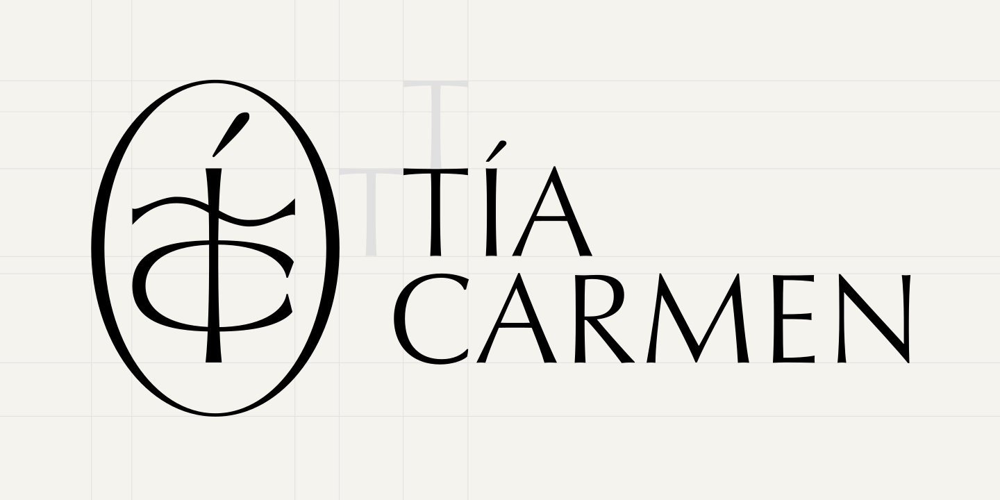
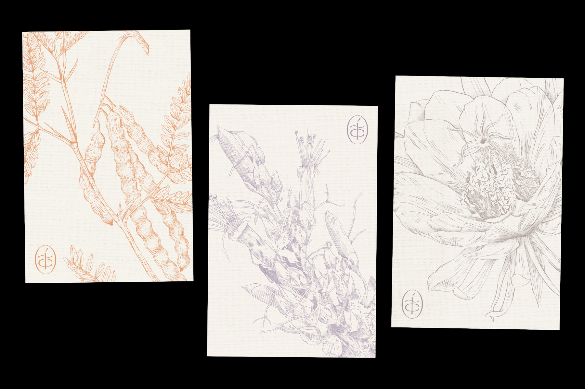
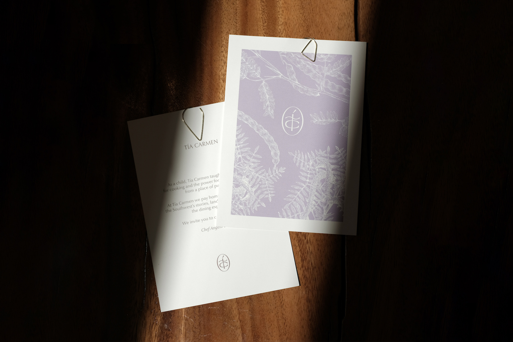
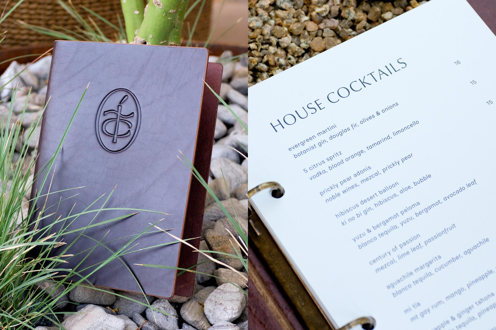
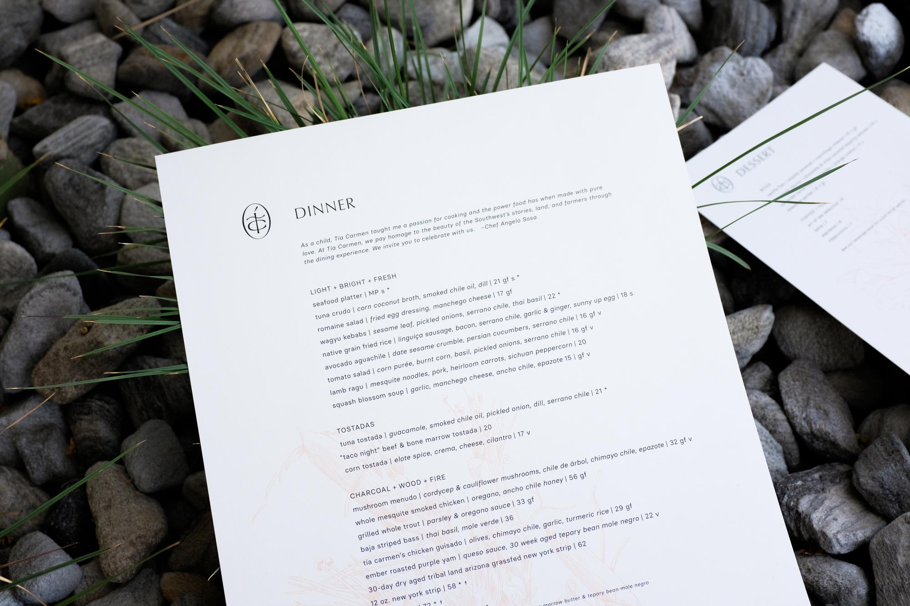
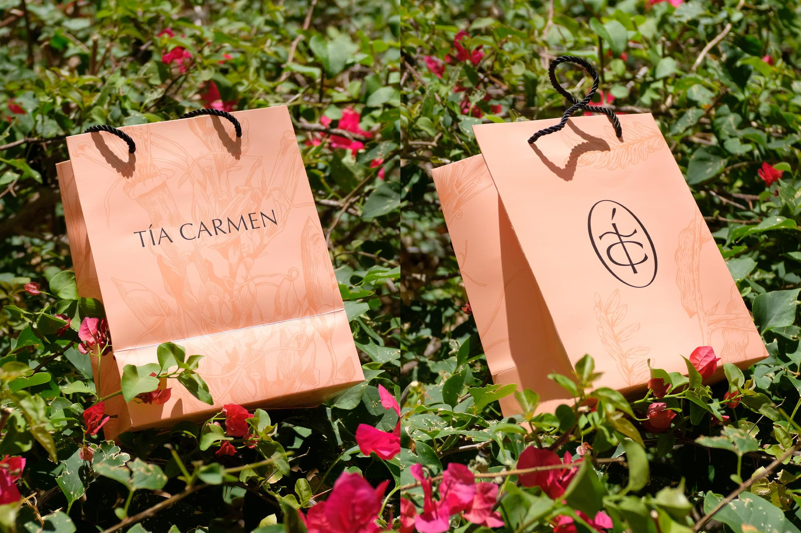
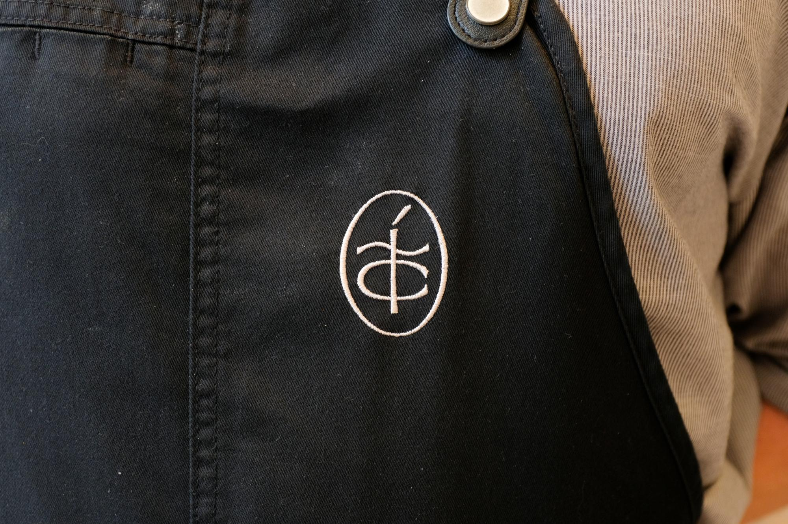

Tía Carmen Identity
A logo, seal and illustration system for Chef Angelo Sosa's Phoenix restaurant, rooted in the Sonoran desert.

Background
Tía Carmen is a Phoenix, AZ restaurant created by Chef Angelo Sosa. The restaurant pays homage to Chef Sosa’s Aunt (Tía) Carmen and celebrates the local landscape, farmers and community of the Southwest, reflecting a mix of tradition and modernity.
Project Overview
Chef Sosa and restaurateur Mark Stone asked Greta Skagerlind and me to create a logo and identity system to be used across the restaurant.

Core to the identity is the TC “seal”, which references the restaurant’s initials and takes visual cues from organic forms.

We also created a suite of illustrations of plants and herbs indigenous to the Sonoran desert, used in print materials like the check presenters below.





